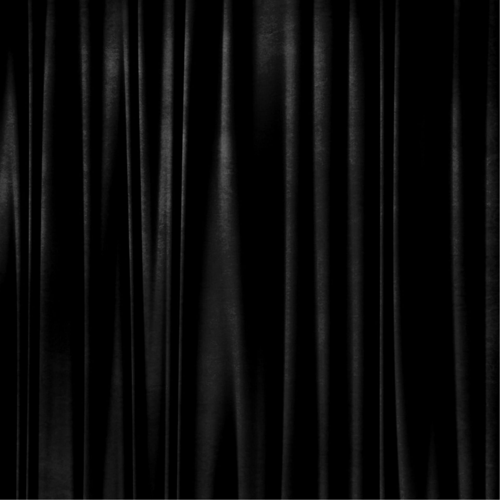
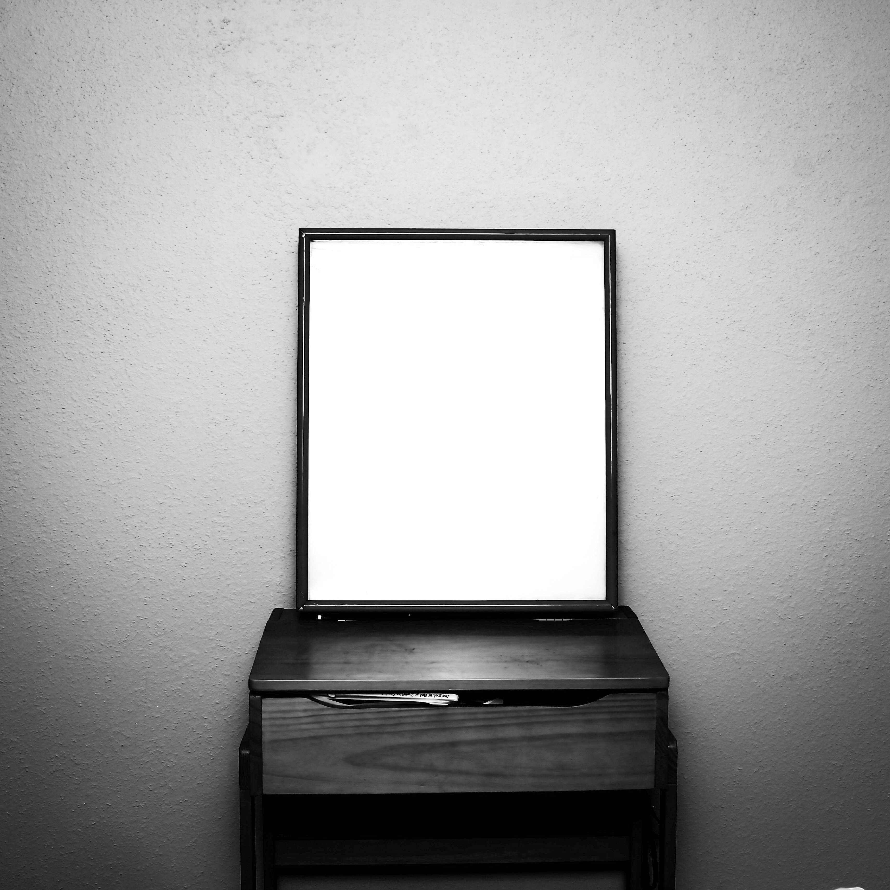
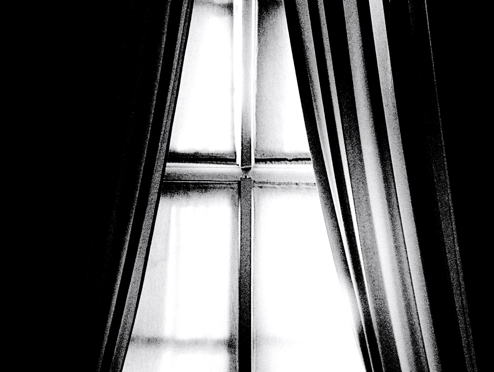

기묘한 꿈 이야기
*실화를 약간 각색했으며, 기괴한 부분이 있으니 민감하신 분들께서는 주의하시길 바랍니다.
(사실 그렇게 무섭진 않음)

그 날은 평소와 같이 암막커튼을 쳐서 암흑 속에서 잠이 들었다.
원래 꿈을 잘 꾸지않는 편인데 아직도 그 꿈의 내용이 생생하게 기억이 난다.
이제부터 꿈 속 입니다.
친구들을 만나기 위해 한 식당에 들어갔다.
나를 제외하고 전부가 와있었다.
나를 바라보며 누군가가 웃으며 말했다.
“어? 앞머리 잘랐네?”
실제에서는 앞머리가 없지만 그런가보다하고 잘랐다고 대답했다.
“성형수술도 했네?”
하지도 않았고, 하고 싶은 생각도 없었으며,
오히려 성형에 호의적이지 않은 나이기에 당황하면서 아니라고 답했다.

분위기가 싸해지면서 한 명이 갑자기
“거울”
이란 단어를 말했다.
나는 어색하게 웃으며 안봐도 된다며 괜찮다고 했다.
그러다 하나둘씩 점점 똑같은 말을 반복했다.
“거울 거울 거울 거울 거울 거울 거울”
처음엔 장난치는거구나하며 넘길라 했지만 그럴 수 없었다.
그저 모두가 무표정으로 나를 바라보며 같은 말을 계속할 뿐이였다.
“ 거울 거울 거울 거울 거울 거울 거울 거울 거울 거울 거울 거울 거울 거울 거울 거울 거울 거울 거울 거울 거울 거울 거울 거울 거울 거울 거울 거울 거울 거울 거울 거울 거울 거울 거울 거울 거울 거울 거울 거울 거울 거울 거울 거울 거울 거울 거울 거울 거울 거울 거울 거울 거울 거울 거울 거울 거울 거울 거울 거울 거울 거울 거울 거울 거울 거울 거울 거울 거울 거울 거울 거울 거울 거울 거울 거울 거울 거울 거울 거울 거울 거울 거울 거울 거울 거울 거울 거울 거울 거울 거울 거울 거울 거울 거울 거울 거울 거울 거울 거울 거울 거울 거울 거울 거울 거울 거울 거울 거울 거울 거울 거울 거울 거울 거울 거울 거울 거울 거울 거울 거울 거울 거울 거울 거울 거울 거울 거울 거울 거울 거울 거울 거울 거울 거울 거울 거울 거울 거울 거울 거울 거울 거울 거울 거울 거울 거울 거울 거울 거울 거울 거울 거울 거울 거울 거울 거울 거울 거울 거울 거울 거울 거울 거울 거울 거울 거울 거울 거울 거울 거울 거울 거울 거울 거울 거울 거울 거울 거울 거울 거울 거울 거울 거울 거울 거울 거울 거울 거울 거울 거울 거울 거울 거울 거울 거울 거울 거울 거울 거울 거울 거울 거울 거울 거울 거울 거울 거울 거울 거울 거울 거울 거울 거울 거울 거울 거울 거울 거울 거울 거울 거울 거울 거울 거울 거울 거울 거울 거울 거울 거울 거울 거울 거울 거울 거울 거울 거울 거울 ”
어떠한 반응도 하지 못하고 기괴함에 가만히 있었다.
그 순간 꿈에서 깼다. 분명하게 나는 현실에 존재했다.
하지만 속삭이는듯한 익숙한 소리가 방 안에서 들렸다.
“거울”
자세히 들어보니 창문 밖에서 나는 소리였다.
우리집은 20층인데.
집중을 해서 들으니 소리가 묘하게 달랐다.
“거울..거으읅..”
몸을 일으켜 천천히 커튼 쪽으로 손을 옮겼다.

어둠 속에 있다가 엄청난 빛 때문에 눈을 제대로 뜰 수 없었다.
가까스로 떠보니 무언가 있었다.
바로
“거욹...거우우욹..”
울고 있는 비둘기가 창틀에 앉아있었다.
오해의 소지가 있을까봐 덧붙이자면 성형을 ‘제가’ 하는 걸 싫어합니다.
그 이유는 피나고 아픈게 싫어요.
다른 사람이 하는 건 별 생각이 없습니다.😉